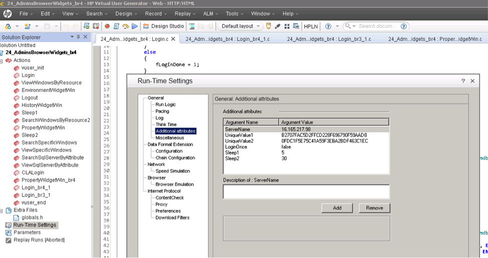

System Benchmark Testing Scenarios
The UCMDB system benchmark testing lasts 8 hours including
- Data-in: "1 data-in user". Each data-in user performs insert of bulk of 10K CIs 1 time, then update of those 10K CIs 3 times and then delete of 10K CIs.
- Enrichment: "1 enrichment user". Each enrichment user performs insert-update-delete of 3K CIs, in the interval of each operation is 15 minutes.
- TQL calculation: "13 TQL users". Each user calculates 10 TQLs in interval of 100 seconds and then saves and deletes TQLs each 30 seconds.
- View: "6 view users". Each user saves and deletes views each 30 seconds, gets all views each 1 minute. *
Here is the screenshot of LoadRunner testing scenario

We can see, in "Scenarios Groups" windows, there is 8 scripts. The script "systemtest-newdata-in-warmup" will be executed firstly. After this script finished, The rest of the scripts will be executed and ran for 8 hours.
- "Monitoring_HeapInfo" is the script to minitoring the UCMDB java heap usage durning the test
How to change the concurrent users and running duration?
After you select any group in "Scenario Groups" Window. You can see a "Scenario Schedule" Window listed blow.

- "Start Vusers" - Change the concurrent user number
- "Duration" - Change the running duration
How to modify browser load runner script to make it work in your test environment
- Record load runner login script with browser server in your test environment.
Find two string values marked in yellow in script you recorded.
lr_start_transaction("Browser_Login"); web_custom_request("ucmdb_browser.rpc_2", "URL=http://{lrServerName}:8088/ucmdb-browser/ucmdb_browser/ucmdb_browser.rpc", "Method=POST", "Resource=0", "RecContentType=application/json", "Referer=http://{lrServerName}:8088/ucmdb-browser/ucmdb_browser.jsp", "Snapshot=t5.inf", "Mode=HTML", "EncType=text/x-gwt-rpc; charset=utf-8", "Body=7|0|9|http://{lrServerName}:8088/ucmdb-browser/ucmdb_browser/|{lrUniqueValue1}|com.hp.ucmdb_browser.shared.UcmdbBrowserService|login|java.lang.String/2004016611|J|Z|admin|Default Client|1|2|3|4|5|5|5|5|6|7|8|8|9|P__________|0|", LAST); web_custom_request("ucmdb_browser.rpc_3", "URL=http://{lrServerName}:8088/ucmdb-browser/ucmdb_browser/ucmdb_browser.rpc", "Method=POST", "Resource=0", "RecContentType=application/json", "Referer=http://{lrServerName}:8088/ucmdb-browser/ucmdb_browser.jsp", "Snapshot=t6.inf", "Mode=HTML", "EncType=text/x-gwt-rpc; charset=utf-8", "Body=7|0|4|http://{lrServerName}:8088/ucmdb-browser/ucmdb_browser/|{lrUniqueValue1}|com.hp.ucmdb_browser.shared.UcmdbBrowserService|getUCMDBUserLocale|1|2|3|4|0|", EXTRARES, "Url=deferredjs/{lrUniqueValue2}/20.cache.js", "Referer=http://{lrServerName}:8088/ucmdb-browser/ucmdb_browser.jsp", ENDITEM, "Url=deferredjs/{lrUniqueValue2}/1.cache.js", "Referer=http://{lrServerName}:8088/ucmdb-browser/ucmdb_browser.jsp", ENDITEM, LAST);Open browser script in virtual user generator, and edit its run-time settings. Replace attributes value of UniqueValue1 and UniqueValue2 with new values got in step 
- Replace server name with your browser server name.
- Run the script and validate.
- If login still failed, you can record login action and replace existing login script with new one.